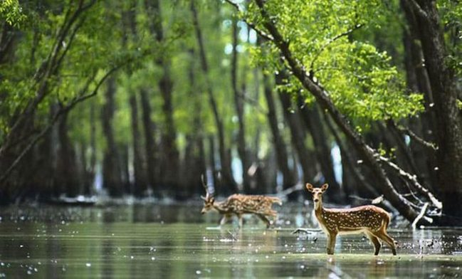

Hello friends how are you all today we are going to talk the Top 10 Most Largest Forests In The World? So friends here is the list of the Top 10 Most Largest Forests In The World.
10 .Mindo-Nambillo Cloud Forest.
In the list of the Top 10 Most Largest Forests In The World, Mindo-Nambillo Cloud Forest is at no 10.This is the 10th Most Largest Forests In The World and also on our list. This is a cloud forest that is moister and cooler which is located in South America. The total area of this forest can reach up to 268-kilometer square. This is near the great Amazonian forest. This is full of many different species of frogs, birds and many other animals. This is very beautiful and largest forest in the world.
9 .Kinabalu National Park.
In the list of the Top 10 Most Largest Forests In The World Kinabalu National Park is at no 9.This is the 9th Most Largest Forests In The World and also on our list. This is the first national park and heritage site of Malaysia. This national park is located in the 89300 Ranau, Sabah, Malaysia. This park was established in 1964. The total area of this park is more than 754-kilometer square. The park is full of different thousands of species. This is the most biological and important site in the world.
8 .Daintree Forest.
In the list of the Top 10 Most Largest Forests In The World, Daintree Forest is at no 8.This is the 8th Most Largest Forests In The World and also on our list. This is very beautiful and heritage site in the world which is located on the northeast coast of Queensland, Australia. The total area of this forest is more than 1200 kilometer square. This is full of different kinds of species of butterflies, insects and many other animals and beautiful birds. This is one of the beautiful and largest forests in the world.
7 .Tropical Rainforest.
In the list of the Top 10 Most Largest Forests In The World Kinabalu National Park is at no 9.This is the 9th Most Largest Forests In The World and also on our list. This is the first national park and heritage site of Malaysia. This national park is located in the 89300 Ranau, Sabah, Malaysia. This park was established in 1964. The total area of this park is more than 754-kilometer square. The park is full of different thousands of species. This is the most biological and important site in the world.
6 .Sundarbans.
 In the list of the Top 10 Most Largest Forests In The World Sundarbans is at no 6.This is the 6th Most Largest Forest In The World and also on our list. This is a very vast forest and heritage site which located in the Khulna Division, Bangladesh, West Bengal, India. The total area of this forest is more than 139,500 hectares. This forest was recognized in 1997. This is considered as a protected forest of Bangladesh. This is full of different kind of species. This is also the house of Bengal Tiger. This is one of the largest forests in the world.
5 .Tongass.
In the list of the Top 10 Most Largest Forests In The World Tongass is at no 5.This is the 5th Most Largest Forest In The World and also on our list. This is also known as the Tongass National Forest which is located in the Ketchikan, AK 99901, USA. The total area of this national forest is more than 17 million acres and the largest forest in the United State. This forest is covered with the western red cedar. This forest is divided into 19 designated wilderness areas. This is one of the largest forests in the world.
4 .Valdivian Temperate Rainforest.
In the list of the Top 10 Most Largest Forests In The World, Valdivian Temperate Rainforest is at no 4.This is the 4th Most Largest Forest In The World and also on our list. This is a very beautiful forest which is located in South America and this forest is extending into Argentina. The total area of this forest is more than 248,100-kilometer square. This forest is full of beautiful trees, plants, flowers, and different kinds of animals and birds. This is one of the largest forests in the world.
3 .Congo Rain Forest.
In the list of the Top 10 Most Largest Forests In The World, Congo Rain Forest is at no 3.This is the 3rd Most Largest Forest In The World and also on our list. This is a part of Congo basin which is located in Central Africa. The total area of this forest is more than 107 million hectares. There are more than 10,000 species of plants in this forest more than 1,000 species of birds and 500 hundred species of fishes and 500 different species of animals. This is one of the largest forests in the world.
2 .The Amazon Forests.
In the list of the Top 10 Most Largest Forests In The World, The Amazon Forests is at no 2.This is the 2nd Most Largest Forest In The World and also on our list. This is a beautiful tropical forest which is located in South America. This forest is spread in many countries like Brazil, Bolivia, Colombia, Peru, Guyana, and Venezuela. The total area of this forest is more than 5.5 million kilometer square. This forest is full of many different kinds of species. This is one of the largest forests in the world.
1 .Taiga.
In the list of the Top 10 Most Largest Forests In The World Taiga is at no 1.This is the Most Largest Forest In The World and also on our list. This is a biological and biggest forest. This is located in the Asia, Europe North America. The total area of this forest is more than 12,000,000 kilometer square. This is full of different kinds of species. This is the biggest more than the size of China and India. This is one of the largest forests in the world.